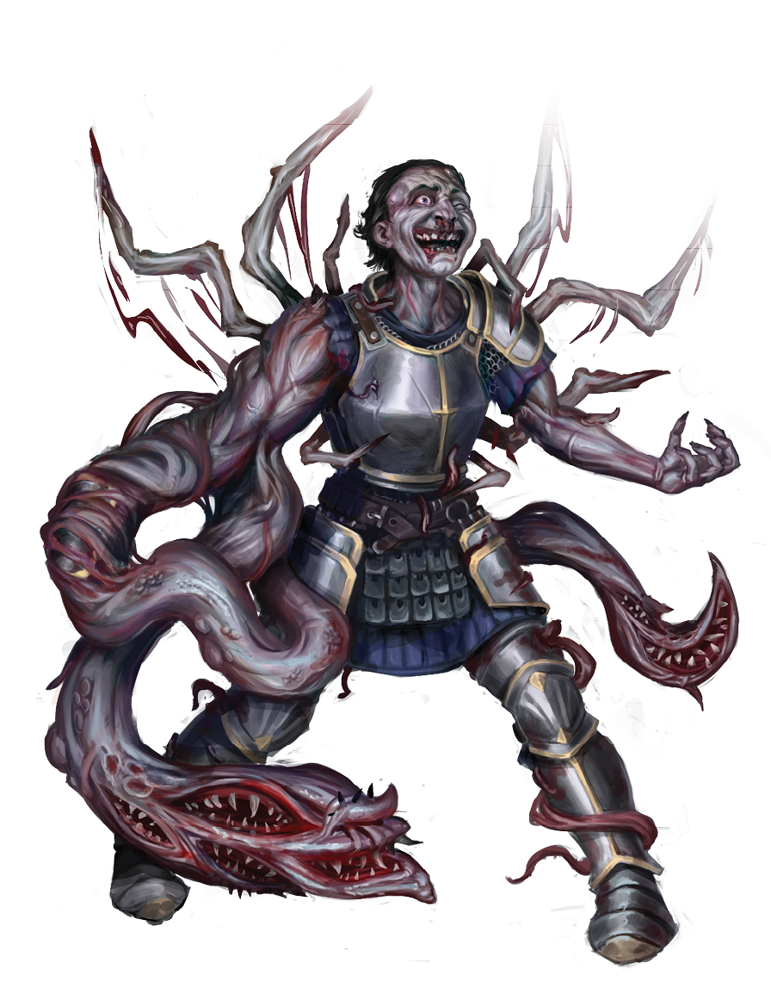

General Questions
Q: What are Terror in Tierhaven & Horror of Ash Bay?
A: Terror in Tierhaven is a D&D 5e adventure module for Foundry VTT set in the dark world of Drakkenheim. It features a city devastated by a mysterious meteor shower, where players must navigate political intrigue, survive horrific mutations, and uncover cosmic mysteries.
Q: What level characters are these adventures designed for?
A: This adventure is optimized for characters of levels 3-5, though it can be adjusted for higher or lower level parties with minor modifications to encounter difficulty.
Q: How long do these adventures typically take to complete?
A: Most groups complete Terror in Tierhaven in 3-5 sessions of 3-4 hours each, depending on play style and how thoroughly they explore the various locations and side quests.
Q: Are these standalone adventures or part of a larger campaign?
A: While Terror in Tierhaven can be run as a standalone adventure, it's designed to integrate seamlessly with the larger Drakkenheim campaign setting and can serve as an introduction to the world or a side quest within an ongoing campaign.
Installation & Setup
Q: What are the system requirements?
A: You need:
- Foundry VTT Version 13 or higher (verified with v13)
- D&D 5e System Version 5.0.0 or higher
- The Drakkenheim setting module (recommended but not required)
Q: How do I install the module?
A:
- In Foundry VTT, go to the setup page
- Click "Add-on Modules"
- Click "Install Module"
- Search for "Sebastian Crowes Terror in Tierhaven"
- Click "Install"
- Enable the module in your world's module settings
Q: Why is the module protected?
A: The module is protected to preserve its commercial integrity and prevent unauthorized redistribution. This doesn't affect gameplay or customization within your own world.
Q: Can I modify the content for my own game?
A: Yes! Once imported into your world, you can freely modify scenes, actors, items, and journal entries to suit your campaign needs. The protection only prevents module-level modifications.
Content & Features
Q: What maps and scenes are included?
A: The module includes:
- Tierhaven city overview map
- Whittaker Farm (interior and exterior)
- Hurlich Farm (ground floor, upper floor, and basement)
- Horace's Hideout (two dungeon levels)
- All maps include pre-configured walls, lighting, and teleport zones
Q: What's the Daily Monster Spawning System?
A: This is an automated feature that spawns 1d4 Agogs or Allopines each in-game day in Horace's Hideout. It uses Foundry's world time tracking, so monsters appear based on your game's calendar, not real-world time. This adds dynamic encounters and reinforces the ongoing corruption threat.
Q: Are there pre-made NPCs and monsters?
A: Yes! The module includes:
- Complete stat blocks for all unique NPCs (Gunther Hurlich, Horace, The Spawn, etc.)
- Custom monsters specific to Drakkenheim (Agogs, Allopines, Animated Delerium Sludge)
- Pre-configured tokens with appropriate artwork
- All creatures have contamination effects and special abilities integrated
Q: Is the contamination system included?
A: Yes, the module includes contamination mechanics, mutation tables, and effects. These are integrated into monster abilities and environmental hazards throughout the adventure.
Gameplay Questions
Q: How do I handle contamination effects?
A: Contamination rules are included in the appendices. Generally:
- Exposure to delerium or corrupted creatures may require saving throws
- Failed saves accumulate contamination levels
- Higher contamination leads to mutations (roll on included tables)
- Remedies and protections are available through story progression
Q: Can players join different factions?
A: Yes! The adventure supports multiple faction allegiances:
- The Hooded Lanterns (investigators of the supernatural)
- Queen's Men (royal agents)
- Followers of the Falling Fire (cult worshippers)
- Independent agents
Q: What if my players want to avoid combat?
A: Terror in Tierhaven supports multiple play styles:
- Many encounters can be resolved through diplomacy or stealth
- Investigation and roleplay are emphasized throughout
- Social encounters with faction representatives provide alternatives
- However, some confrontations are central to the plot
Q: How do I adjust difficulty for different party sizes?
A: For parties outside the standard 4-5 players:
- 3 or fewer players: Reduce enemy numbers by 25-30%, lower HP for bosses
- 6 or more players: Add 1-2 additional enemies per encounter, increase boss HP by 20-30%
- Use the encounter difficulty guidelines in the D&D 5e DMG
Technical Support
Q: The journal entries aren't displaying correctly. What should I do?
A: Check that:
- You're using Foundry v13 or higher
- The module's CSS file (style.css) is properly loaded
- Try refreshing your browser (F5)
- Clear your browser cache if issues persist
Q: Why aren't the monsters spawning daily in Horace's Hideout?
A: Ensure that:
- World time is enabled and advancing in your game
- The horace-hideout-daily-spawn.js script is active (check module settings)
- You have the correct scene loaded (Horace's Hideout)
- The spawning areas aren't blocked by walls or other tokens
Q: Some tokens or images aren't loading. How do I fix this?
A:
- Verify all module files downloaded correctly
- Check your internet connection (some assets may load from external sources)
- Try re-importing the adventure from the compendium
- Ensure no browser extensions are blocking content
Q: Can I use this with other D&D 5e modules?
A: Yes! Terror in Tierhaven is compatible with most D&D 5e modules. Popular combinations include:
- Drakkenheim core modules (recommended for full experience)
- Token enhancement modules (Token Magic FX, etc.)
- UI improvement modules (minimal conflicts expected)
- Combat automation modules (Midi-QOL, etc.)
Content Customization
Q: How can I integrate this with my existing campaign?
A: Several hooks are provided:
- Characters can be sent to investigate the meteor impact
- Faction missions can draw them to Tierhaven
- Random encounters while traveling can lead to the area
- The contamination spreading could threaten nearby settlements
Q: Can I change the faction dynamics?
A: Absolutely! The factions are designed to be flexible:
- Add new factions relevant to your world
- Change faction goals and motivations
- Alter NPC allegiances to create different conflicts
- Remove factions that don't fit your campaign
Q: How do I scale this for higher-level parties?
A: For parties above level 5:
- Add class levels to major NPCs
- Include additional corrupted creatures
- Increase contamination save DCs
- Add legendary actions to boss encounters
- Introduce more powerful delerium-based items
Community & Support
Q: Where can I get additional help?
A:
- Visit Ghostfire Gaming for official support
- Join the Ghostfire Gaming Discord community
- Check the GitHub repository for updates
- Contact Ghostfire Tyler on Discord: teekz1763
Q: Can I stream or create content featuring this module?
A: Yes! Ghostfire Gaming encourages content creation. Please credit the module and Ghostfire Gaming in your content. Commercial use beyond personal streaming requires permission.
Q: Will there be updates or additional content?
A: Updates are released periodically to fix bugs and improve compatibility. Check the changelog for the latest updates. Additional Drakkenheim content is regularly released by Ghostfire Gaming.
Q: I found a bug. How do I report it?
A: Report bugs through:
- The official Ghostfire Gaming contact page
- The GitHub repository issues section
- The Ghostfire Gaming Discord server
Need more help? Check our Troubleshooting Guide for detailed technical solutions.